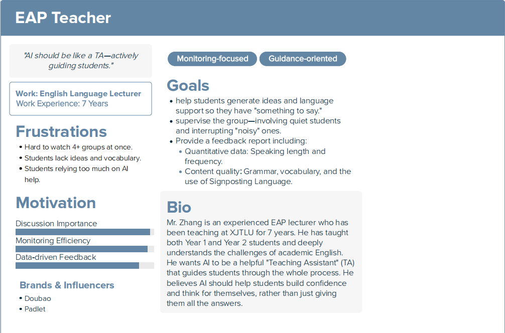

01. Motivation & Research
The Why
We chose the EAP student support track because our initial research revealed a critical pain point: most students experience high anxiety and "brain blanks" during English discussions, which prevents them from practicing before class and building confidence. Existing tools fail to address both the psychological safety and real-time feedback needs of multilingual learners. XJTAIK was created to bridge this gap by providing a low-pressure, AI-powered practice space that simulates real discussions while offering personalized, non-judgmental support.
The Gap Analysis (Integrated Version)
Overall Strengths
1. AI technologies such as natural language processing and voice recognition can effectively realize discussion transcription, content summarization, and dialogue behavior analysis.
2. Most tools support data statistics and feedback functions, which help teachers grasp the basic situation of group interaction and discussion output.
3. Mature commercial platforms provide stable collaboration environment and user management, which can meet basic discussion and recording needs.
Overall Limitations
1. Few tools can provide real-time AI intervention and guidance to actively encourage silent students to speak and improve uneven participation.
2. There is a lack of special design for low discussion efficiency and task progress control, and cannot effectively solve low-efficiency problems in group work.
3. No integrated system realizes the closed loop of AI discussion assistance, student participation analysis, and visualized feedback for teachers simultaneously.
Stakeholders
Primary: EAP Students (anxious, avoid speaking).
Secondary: EAP Teachers (need participation insights).
References
4 Academic Papers (IEEE Citation Style)
[1] A. Almeda et al., “Dynamic AI support for equitable group discussion,” arXiv preprint, 2026.
[2] E. C. Sinclair, “DEBO: AI scaffolding for debate and structured talk,” Computers & Education, 2024.
[3] B. A. van der Meij et al., “Conversational agent for productive collaborative discussion,” International Journal of Computer-Supported Collaborative Learning, 2025.
[4] M. Chen, “M-Powering Teachers: AI-driven feedback on classroom talk,” Stanford Graduate School of Education, 2024.
4 Commercial Products
1. TeachFX
2. Microsoft Teams Copilot
3. Feishu / DingTalk AI Assistant
4. Notta / Krisp

